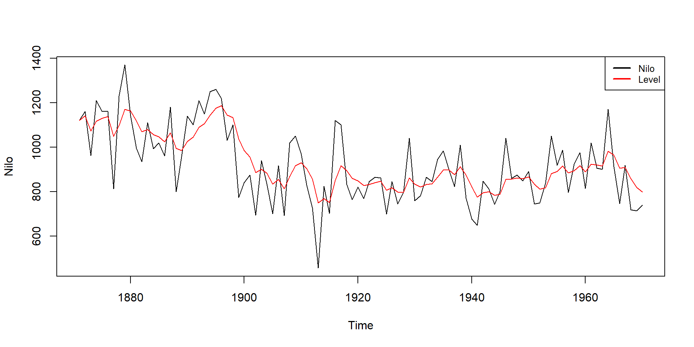
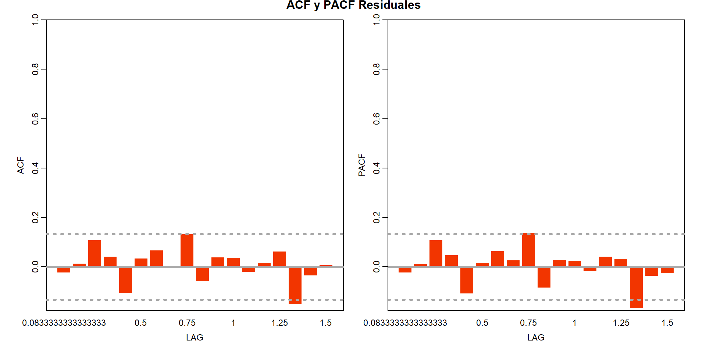

Modelos estructurales de series de tiempo
Series de tiempo
UNAL - Departamento de estadística
lunes, 4 de diciembre, 2023
Contenido
- Modelos de Espacio - Estado
- Filtro de Kalman
- Modelos Estructurales de Series de tiempo
- Predicción de las componentes del modelo
- Estimación de los parámetros del modelo
- Diagnóstico
- Ejemplo Aplicado en R
- Conclusiones
Introducción
En los modelos estructurales de series de tiempo se tienen las siguientes consideraciones:
Las observaciones provienen de un Espacio-Estado no observable, que es dinámico.
Las componentes del modelo (no observables) son generados por este proceso de Espacio - Estado, además vienen acompañadas con un ruido añadido.
En general, el interés recae en modelar el Espacio-Estado no observable. Además, los modelos suelen considerar la clásica descomposición en la que una serie de tiempo es vista como la suma de las componentes de tendencia, estacionalidad y error.
No obstante esta metodología para el modelado es flexible y modular, además permite una inspección visual de los componentes subyacentes del modelo.
Modelos de Espacio - Estado
Los modelos de Espacio - Estado modelan la estructura temporal de los datos por medio de estados no observables (latentes) que cambian en el tiempo.
Los estados no observables se representan como vectores \(\alpha_1, \cdots, \alpha_n\) y están asociados a las observaciones \(y_1, \cdots, y_n\). La relación o dependencia probabilística entre los estados y las observaciones es especificada por el modelo de Espacio - Estado.
El objetivo es inferir propiedades de los estados \(\alpha_t\) a partir de las observaciones \(y_1, \cdots, y_n\).
Los estados no observables del modelo se modelan mediante un modelo estocástico, su dinámica sigue un proceso de Markov de primer orden.
Nos enfocaremos en los modelos de Espacio - Estado lineales y gaussianos.
Forma general de un modelo de Espacio - Estado lineal Gaussiano
- \(y_t:\) vector de observaciones
- \(\alpha_t:\) vector de estados no observable
\[t=1,\cdots,n\]
Distribución del estado inicial \(\alpha_1 \sim N\left(a_1,P_1\right).\)
\(\varepsilon_t\) y \(\eta_t\) son independientes para todo \(t, s\) e independientes de \(\alpha_1\).
Las matrices \(Z_t\), \(T_t\), \(R_t\), \(H_t\) y \(Q_t\) determinan la estructura del modelo. Estas matrices pueden contener parámetros desconocidos.
Los parámetros del modelo son \(H_t\) y \(Q_t\).
Filtro de Kalman
El filtro de Kalman es un algoritmo recursivo; la mejor estimación actual se actualiza cada vez que se obtiene una nueva observación.
El filtro de Kalman calcula la media y la varianza del estado no observado, dado las observaciones.
El estado es gaussiano, su distribución está caracterizada por la media y la varianza.
Para iniciar la recursión, se requieren \(a_1\) y \(P_1\), lo cuáles se asumen conocidos.
Existen varias maneras de inicializar el algoritmo cuando \(a_1\) y \(P_1\) son desconocidos.

Filtro de Kalman

Modelos estructurales de series de tiempo
Un modelo estructural toma una serie de tiempo y la descompone en componentes no observables tales como tendencia, estacionalidad, ciclos, términos de error y otras componentes relevantes como efectos de impacto o la inclusión de otras variables explicativas. Las componentes se modelan explícitamente y pueden ser interpretadas directamente.
Estos modelos se transforman en un modelo de Espacio-Estado, utilizando el algoritmo del Filtro de Kalman y su suavizador correspondiente, lo que facilita el cálculo de la función de verosimilitud.

Modelo estructural de series de tiempo
Modelo de nivel local
- \(y_t:\) datos observables
- \(\mu_t:\) estado no observable (Componente de tendencia)
\(\mu_t\) es el nivel (Tendencia estocástica) de la serie en el tiempo \(t\).
Los parámetros del modelo son \(\sigma^2_\varepsilon\) y \(\sigma^2_\xi\).
\[\begin{aligned} \alpha_t = \mu_t \hspace{2 cm} T_t = R_t = Z_t = 1 \\ Q_t = \sigma^2_{\eta} \hspace{2 cm} H_t = \sigma^2_{\epsilon} \end{aligned}\]Ejemplo
Modelo de tendencia local lineal
- \(y_t:\) datos observables
- \(\mu_t, \nu_t:\) estados no observables
\(\mu_t\) es el nivel y \(\nu_t\) es la pendiente de la serie en el tiempo \(t\).
\[\begin{aligned} \alpha_t = [\mu_t, \ \nu_t] \hspace{1 cm} T_t = \begin{bmatrix} 1 & 1 \\ 0 & 1 \end{bmatrix} \hspace{1 cm} R_t = \begin{bmatrix} 1 & 0 \\ 0 & 1 \end{bmatrix} \\ Z_t = [1, \ 0] \hspace{1 cm} Q_t = \begin{bmatrix} \sigma^2_{\xi} & 0 \\ 0 & \sigma^2_{\zeta} \end{bmatrix} \hspace{1 cm} H_t = \sigma^2_{\epsilon} \end{aligned}\]Ejemplo
Modelo de tendencia local con estacionalidad
- \(y_t:\) datos observables
- \(\mu_t, \nu_t, \gamma_t:\) estados no observables
\(\mu_t\) es el nivel de la serie en el tiempo \(t\), \(\nu_t\) es la pendiente de la serie en el tiempo \(t\) y \(\gamma_t\) es la componente estacional en el tiempo \(t\).
Los parámetros del modelo son \(\sigma^2_\varepsilon\), \(\sigma^2_\xi\) y \(\sigma^2_\zeta\).
Ejemplo
Variables explicativas e intervenciones
- \(y_t:\) datos observables
- \(\mu_t, \nu_t, \gamma_t, x_t, w_t:\) estados no observables
Modelo de nivel local
\[\begin{aligned} \begin{array}{ccc} y_t = \mu_t + \varepsilon_t, & \hspace{1 cm} & y_t = \mu_t + \beta_t x_t \varepsilon_t \\ \mu_{t+1} = \mu_t + \lambda_t w_t + \xi_t & \hspace{1 cm} & \mu_{t+1} = \mu_t + \xi_t \\ \lambda_t+1 = \lambda_t & \hspace{1 cm} & \beta_{t+1} = \beta_t + \tau_t \end{array} \end{aligned}\]Predicción de las componentes del modelo
El tratamiento estadístico de las componentes no observables del modelo puede ser llevado a cabo usando la forma general del modelo de Espacio - Estado y los algoritmos asociados del Filtro de Kalman y de Suavizado.
\[\begin{aligned} y_t & =Z_t\alpha_t+\varepsilon_t & & \varepsilon_t \sim N\left(0, H_t\right) \hspace{1cm} \textrm{Ecuación de observación}\\ \alpha_{t+1} & = T_t\alpha_t+R_t\eta_t & & \eta_t \sim N\left(0,Q_t\right) \hspace{1cm} \textrm{Ecuación de estados} \end{aligned}\]\[t=1,\cdots,n \hspace{2 cm} \alpha_1 \sim N \left(a_1,P_1\right) \]
Filtrado
Sea \(Y_t = \left\{y_1, \cdots , y_t\right\}\). El Filtro de Kalman es una forma recursiva para calcular: \[a_{t|t} = E\left(\alpha_t|Y_t\right) \hspace{2cm} P_{t|t} = Var\left(\alpha_{t}|Y_t\right)\] \[a_{t+1} = E\left(\alpha_{t+1}|Y_t\right) \hspace{2cm} P_{t+1} = Var\left(\alpha_{t+1}|Y_t\right).\] Como se asume normalidad en todo el modelo,
\[\alpha_t | Y_t \sim N\left(a_{t|t}, P_{t|t}\right)\] \[\alpha_{t+1} | Y_t \sim N\left(a_{t+1}, P_{t+1}\right)\] La idea es calcular \(a_{t|t}\), \(P_{t|t}\), \(a_{t+1}\) y \(P_{t+1}\) partir de \(a_t\) y \(P_t\) donde
\[\alpha_t|Y_{t-1} \sim N\left(a_t, P_t\right)\]
El error de predicción \(1\) paso adelante de \(y_t\) se denota como \(v_t\) y se define como: \[v_t = y_t - E\left(y_t|Y_{t-1}\right) = y_t - E\left(Z_t\alpha_t + \varepsilon_t|Y_{t-1}\right) = \color{RoyalBlue}{y_t - Z_ta_t}\] La varianza del error de predicción \(1\) paso adelante de \(v_t\) se denota como \(F_t\) y está dado por: \[F_t = Var\left(v_t|Y_{t-1}\right) = Var\left(y_t - Z_ta_t|Y_{t-1}\right) = Var\left(Z_t\alpha_t + \varepsilon_t - Z_ta_t|Y_{t-1}\right) = \color{RoyalBlue}{Z_tP_tZ_t^\prime + H_t}\] Con esto, se actualiza el estimador filtrado de \(\alpha_t\) y su respectiva varianza:
\[a_{t|t} = \color{RoyalBlue}{a_t + P_tZ_t^\prime F_t^{-1}v_t}\] \[P_{t|t} = \color{RoyalBlue}{P_t-P_tZ_t^\prime F_t^{-1}Z_tP_t}\]
Luego se calculan \(a_{t+1}\) y \(P_{t+1}\) de forma recursiva. Teniendo en cuenta que \(\alpha_{t+1} = T_t\alpha_t + R_t\eta_t\) se tiene que: \[a_{t+1} = E\left(T_t\alpha_t + R_t\eta_t|Y_t\right) = T_tE\left(\alpha_t|Y_t\right)\] \[P_{t+1} = Var\left(T_t\alpha_t + R_t\eta_t|Y_t\right) = T_tVar\left(\alpha_t|Y_t\right)T_t^\prime + R_tQ_tR_t^\prime\] \[t=1,\cdots,n.\] Y reemplazando las actualizaciones, el predictor \(1\) paso adelante de \(\alpha_t\) y su varianza están dados por: \[\begin{align*} a_{t+1} &= T_t\left(a_t + P_tZ_t^\prime F_t^{-1}v_t\right)\\ &= T_ta_t + T_tP_tZ_t^\prime F_t^{-1}v_t\\ &= \color{RoyalBlue}{T_ta_t + K_tv_t} \end{align*}\]
\[\begin{align*} P_{t+1} &= T_t\left(P_t-P_tZ_t^\prime F_t^{-1}Z_tP_t\right)T_t^\prime + R_tQ_tR_t^\prime\\ &= T_tP_tT_t^\prime - T_tP_tZ_t^\prime F_t^{-1}Z_tP_tT_t^\prime + R_tQ_tR_t^\prime\\ &= T_tP_tT_t^\prime - K_tZ_tP_tT_t^\prime + R_tQ_tR_t^\prime\\ &= \color{RoyalBlue}{T_tP_t\left(T_t-K_tZ_t\right)^\prime + R_tQ_tR_t^\prime} \end{align*}\]Filtro de Kalman
\[\begin{array}{ll}\quad v_t=y_t-Z_t a_t & F_t=Z_t P_t Z_t^{\prime}+H_t \\ a_{t \mid t}=a_t+P_t Z_t^{\prime} F_t^{-1} \nu_t & P_{t \mid t}=P_t-P_t Z_t^{\prime} F_t^{-1} Z_t P_t \\ a_{t+1}=T_t a_t+K_t \nu_t & P_{t+1}=T_t P_t\left(T_t-K_t Z_t\right)^{\prime}+R_t Q_t R_t^{\prime}\end{array}\] \(K_t=T_tP_tZ_t^\prime F_t^{-1}\) es la ganancia de Kalman.
Una vez calculados \(a_{t|t}\) y \(P_{t|t}\), las predicciones del filtro se calculan como: \[a_{t+1} = T_ta_{t|t}\] \[P_{t+1} = T_tP_{t|t}T_t^\prime + R_tQ_tR_t^\prime\]
Suavizado
Sea \(Y_n = \left\{y_1, \cdots, y_n\right\}.\) El suavizado se refiere al cálculo de \(\hat{\alpha}_t = E\left(\alpha_t|Y_n\right)\) y de \(V_t = Var\left(\alpha_t|Y_n\right)\).
\(\hat{\alpha}_t\) y \(V_t\) se calculan de forma recursiva como sigue: \[\begin{array}{ll}\quad r_{t-1}=Z_t^\prime F_t^{-1}v_t + L_t^\prime r_t & \hspace{3cm}N_{t-1} = Z_t^\prime F_t^{-1}Z_t + L_t^\prime N_tL_t \\ \hspace{2cm}\hat{\alpha}_t = a_t + P_tr_{t-1} & \hspace{4.5cm}V_t = P_t- P_tN_{t-1}P_t \\ \end{array}\] \[t=n,\cdots,1. \text{ donde } L_t = T_t - K_tZ_t\] El algoritmo se inicializa con \(r_n=0\) y \(N_n=0.\)
Pronósticos
El pronóstico de observaciones futuras es tratado como si estas fueran valores faltantes.
Observaciones faltantes
Los algoritmos del Filtro de Kalman y de Suavizado preservan la misma forma a excepción que se hace \(Z_t=0\) en los tiempos \(t\) en que hay observaciones faltantes.
Así, se tiene que las ecuaciones del Filtro de Kalman quedan como sigue:
\[a_{t|t} = a_t, \hspace{1cm} P_{t|t} = P_t, \hspace{1cm} a_{t+1} = T_ta_t, \hspace{1cm} P_{t+1} = T_tP_tT_t^\prime + R_tQ_tR_t^\prime\] y las recursiones del Suavizado:
\[r_{t-1}= T^\prime_t r_t, \hspace{1cm} N_{t-1} = T_t^\prime N_t T_t\] para cada \(t\) que presente observación faltante.
Pronósticos
El interés es pronosticar \(y_{n+j}\), \(j = 1,\cdots,J\) a partir de \(y_1, \cdots, y_n.\)
Sea \(\bar{y}_{n+j} = E\left(y_{n+j}|Y_n\right)\) el cuál minimiza el error cuadrático medio de predicción \(\bar{F}_{n+j} = E\left[\left(\bar{y}_{n+j}-y_{n+j}\right)^2|Y_n\right]\).
La predicción de \(y_{n+j}\) cuando \(j=1\) se obtiene directamente. De la ecuación de observación se tiene que \(y_{n+1} = Z_{n+1}\alpha_{n+1} + \varepsilon_{n+1}\), luego: \[\bar{y}_{n+1} = Z_{n+1}E\left(\alpha_{n+1}|Y_n\right) = Z_{n+1}a_{n+1}\] \[\bar{F}_{n+1} = E\left[\left(\bar{y}_{n+1}-y_{n+1}\right)^2\right] = Z_{n+1}P_{n+1}Z^\prime_{n+1} + H_{n+1}.\]
Cuando \(j=2,\cdots,J\), el pronóstico \(\bar{y}_{n+j}\) se hace asumiendo que \(y_{n+j}\), \(j=2,\cdots,J\) son observaciones faltantes.
Sean \(\bar{a}_{n+j} = E\left(\alpha_{n+j}|Y_n\right)\) y \(\bar{P}_{n+j} = E\left[\left(\bar{a}_{n+j} - \alpha_{n+j}\right)\left(\bar{a}_{n+j} - \alpha_{n+j}\right)^\prime|Y_n\right]\).
De la ecuación de observación se tiene que \(y_{n+j} = Z_{n+j}\alpha_{n+j} + \varepsilon_{n+j}\), luego: \[\bar{y}_{n+j} = Z_{n+j}E\left(\alpha_{n+j}|Y_n\right) = Z_{n+j}\bar{a}_{n+j}\] \[\bar{F} = Z_{n+j}\bar{P}_{n+j}Z^\prime_{n+j}+H_{n+j}.\]
Las recursiones para calcular \(\bar{a}_{n+j}\) y \(\bar{P}_{n+j}\) se obtienen mediante la ecuación de estados \(\alpha_{n+j+1} = T_{n+j} \alpha_{n+j} + R_{n+j}\eta_{n+j}\), luego:
\[\bar{a}_{n+j+1} = T_{n+j}E\left(\alpha_{n+j}|Y_n\right) = T_{n+j}\bar{a}_{n+j}\] \[\bar{P}_{n+j+1} = T_{n+j}\bar{P}_{n+j}T_{n+j}^\prime + R_{n+j}Q_{n+j}R^\prime_{n+j}\] \[j = 1, \cdots, J-1.\]
Estimación de parámetros
Las matrices del sistema dependen típicamente de un vector de parámetros \(\psi\). Asumiendo que el vector de estados inicial tiene distribución conocida \(\alpha_1 \sim N\left(a_1,P_1\right)\) entonces la estimación de los parámetros se hace vía la función de verosimilitud:
\[L = \prod_{t=1}^n p\left(y_t|Y_{t-1}\right)\] \[\log L = \sum_{t=1}^n \log p\left(y_t|Y_{t-1}\right)\] Teniendo en cuenta que \(y_t|Y_{t-1} \sim N\left(Z_ta_t, F_t\right)\) entonces: \[\log L = -\frac{n}{2}\log 2\pi - \frac{1}{2}\sum_{t=1}^n\left(\log F_t + F_t^{-1}v_t^2\right)\] donde \(v_t = y_t - Z_ta_t.\)
Diagnóstico
Para este se realiza comprobación de supuestos sobre los residuales \(e_t\),que se obtienen de la siguiente manera:
\[e_t=\frac{v_t}{\sqrt{F_t}}\]
Se prueba si cumplen los supuestos de:
- Normalidad (Jarque - Bera Test, Shapiro - Wilk Test)
- No autocorrelación (Box - Pierce Test, Box - Ljung Test))
Ejemplo Aplicado
Se modela a continuación la Serie de Exportaciones mensuales en colombia usando el Modelo de Tendencia Lineal Local con Estacionalidad expuesto anteriormente. El modelamiento se realiza usando el paquete stm de R.\
[1] "Número de datos en el conjunto de entrenamiento: 225"[1] "Número de datos en el conjunto de entrenamiento: 57"Predicción de las componentes
Se realiza la transformación de Box-Cox con \(\lambda = 0.45\) sobre los datos y se entrena el modelo sobre el primer \(80\%\) de la serie para luego evaluar la capacidad predictiva del modelo un paso adelante. Las predicciones de las componentes del modelo son:
Ajuste de las componentes combinadas
Residuales
ACF residuales
Pruebas de normalidad y autocorrelación
Se rechaza la prueba de normalidad, por lo que los residuales no cumplen este supuesto.
Jarque Bera Test
data: resids
X-squared = 12.66, df = 2, p-value = 0.001782No se rechaza la prueba de No Autocorrelación por lo que los residuales sí cumplen este supuesto.
Pronóstico
Se presenta el pronóstico del modelo para los siguientes 12 meses junto con los datos reales observados en esos 12 meses.
RECM12 296615.1Capacidad predictiva un paso adelante
Con el fin de comparar con los modelos ajustados anteriormente a esta serie, evaluamos mediante el Rolling la capacidad predictiva del modelo estructural ajustado anteriormente.
Predicciones Un paso Adelantes Rolling
RECM_UN_PASO 423125.1Mejoría del modelo al ir incluyendo las componentes
Se ajustaron para la misma serie los siguientes modelos y se obtuvo el error de predicción un paso adelante para cada uno de ellos con el fin de compararlos.
Modelo de Nivel Local: No normalidad y no cumple No Autocorrelación. (\(RECM = 428858.3\))
Modelo de Tendencia Lineal Local: No normalidad y no cumple No Autocorrelación. (\(RECM = 430407.9\))
Modelo de Nivel Local con Estacionalidad: No normalidad y sí cumple No Autocorrelación. (\(RECM = 425911.6\))
Modelo de Tendencia Lineal Local con Estacionalidad (\(RECM = 423125.1\)).
MUCHAS GRACIAS
Universidad Nacional de Colombia